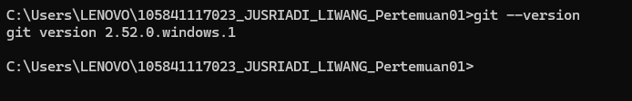
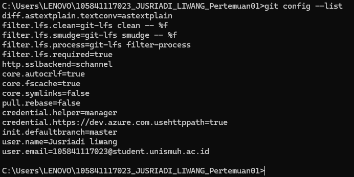
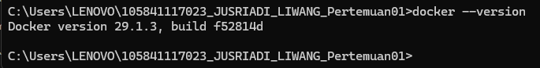
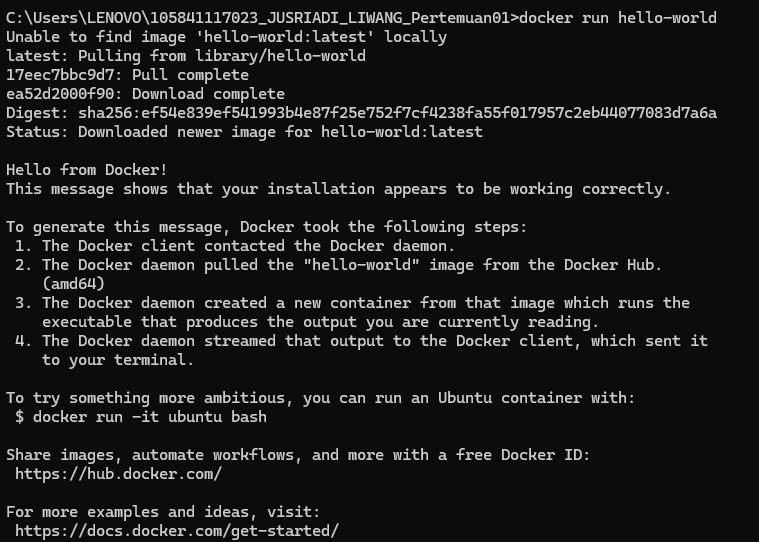
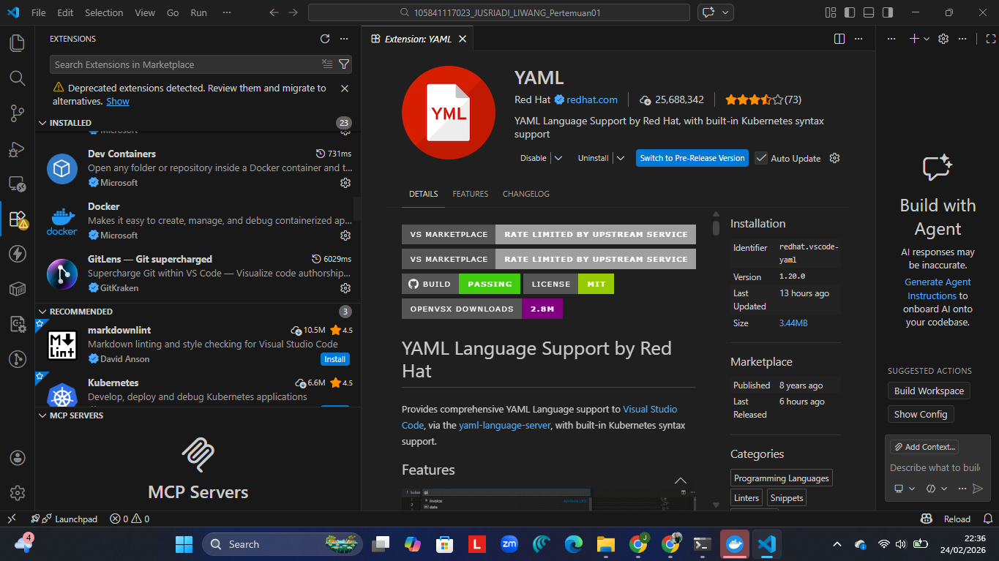

| Nama | Jusriadi Liwang |
|---|---|
| NIM | 105841117023 |
| Mata Kuliah | Praktikum DevOps |
DevOps adalah pendekatan modern dalam pengembangan perangkat lunak yang mengintegrasikan tim Development dan Operations agar bekerja secara kolaboratif sepanjang siklus hidup aplikasi.
DevOps menekankan budaya kolaborasi, otomatisasi, pengukuran, serta perbaikan berkelanjutan melalui penerapan CI/CD.





Praktikum ini memberikan pemahaman awal mengenai pentingnya kolaborasi dan automation dalam pengembangan software modern. Saya berharap dapat memahami CI/CD lebih mendalam pada pertemuan berikutnya.